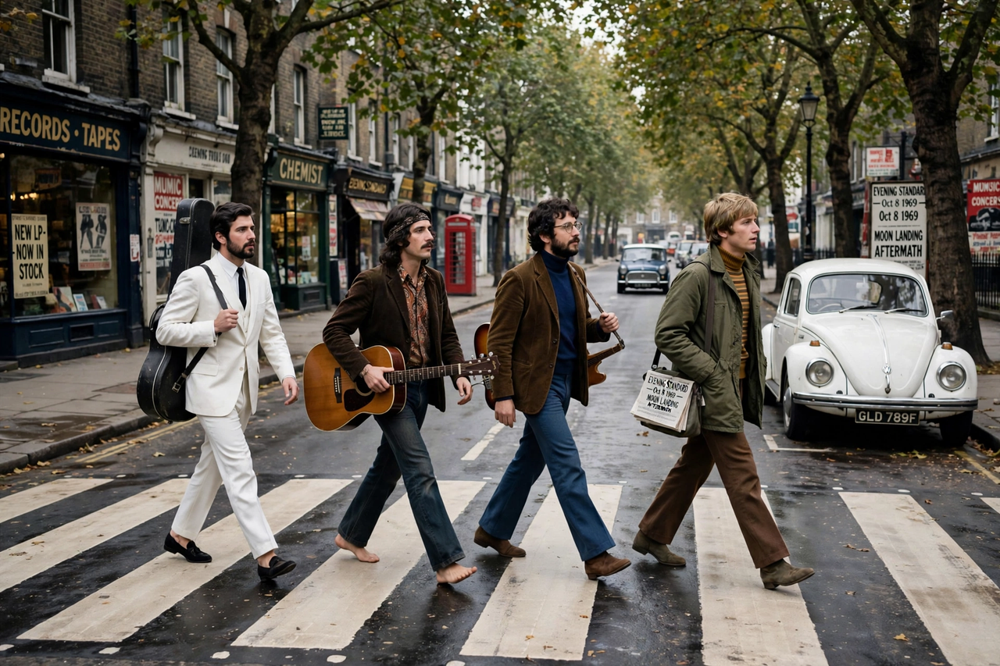

The Beatles
From Wikipedia, the free encyclopedia

The Beatles crossing Abbey Road, London, 1969 — four figures on the zebra crossingThe Beatles crossing Abbey Road, London, 1969 — four figures on the zebra crossing
The Beatles were an English rock band formed in Liverpool in 1960, comprising John Lennon, Paul McCartney, George Harrison and Ringo Starr. They are the best-selling music act of all time and arguably the most influential band in popular music history.
After honing their act in Liverpool's Cavern Club and in Hamburg, the band — managed by Brian Epstein and produced by George Martin — conquered Britain in 1963 and America in 1964, igniting "Beatlemania" and the British Invasion. As the 1960s progressed their music evolved from beat-pop through psychedelia to ambitious studio work: Rubber Soul, Revolver, Sgt. Pepper's Lonely Hearts Club Band, the "White Album" and Abbey Road are landmarks of the album era. Lennon and McCartney's songwriting partnership, increasingly writing separately, produced standards such as "Yesterday", "A Day in the Life", "Let It Be" and Harrison's "Here Comes the Sun".
The band broke up in 1970 amid business disputes; each member pursued a solo career. Lennon was murdered in 1980; Harrison died in 2001. The Beatles' recordings continue to sell and stream in enormous numbers, and a restored final song, "Now and Then", was released in 2023 using audio technology developed for Peter Jackson's Get Back documentary.